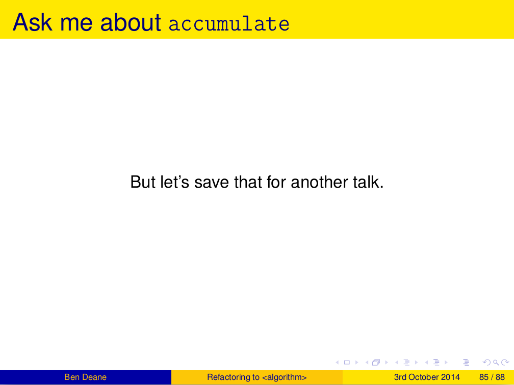
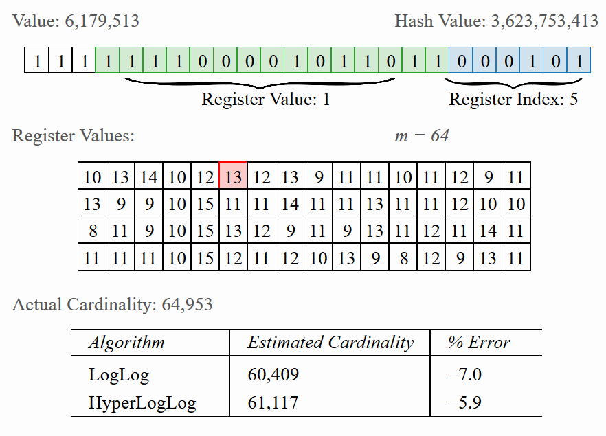

std::accumulate
Exploring an Algorithmic Empire
Ben Deane
bdeane@blizzard.com / @ben_deane
29th July 2016
Part 0
The Most Powerful Algorithm in the World?
A Long Time Ago, In a Galaxy etc…

A Long Time Ago, In a Galaxy etc…

Another Talk
This is that talk.
Nomenclature note
I'll try to talk "in C++" for this talk.
But I may occasionally say "fold" when I mean "accumulate" or "reduce".
Don't worry… this talk isn't FP-heavy. There's no Haskell code.
Part 1
Accumulatable Things
std::accumulate
template <class InputIt, class T, class BinaryOp> T accumulate(InputIt first, InputIt last, T init, BinaryOp op) { for (; first != last; ++first) { init = op(init, *first); } return init; }
Typical uses
vector<int> v = {1,2,3,4,5}; int sum = accumulate(v.cbegin(), v.cend(), 0, plus<>{}); cout << sum << '\n'; int product = accumulate(v.cbegin(), v.cend(), 1, multiplies<>{}); cout << product << '\n';
Of course, this is not why you're here. What else can we accumulate?
How about finding a min or max?
vector<unsigned> v = {1,2,3,4,5}; unsigned max_val = accumulate(v.cbegin(), v.cend(), 0, [] (unsigned a, unsigned b) { return a > b ? a : b; }); cout << max_val << '\n';
How about finding a min or max?
Value-based min_element or max_element
template <typename It, typename Compare, typename T = typename std::iterator_traits<It>::value_type> T min_element(It first, It last, Compare cmp) { // precondition: first != last auto init = *first; return accumulate( ++first, last, init, [&] (const T& a, const T& b) { return cmp(b, a) ? b : a; }); }
What about bool values?
bool results[] = {true, false, true, true, false}; bool all_true = accumulate(cbegin(results), cend(results), true, logical_and<>{}); bool some_true = accumulate(cbegin(results), cend(results), false, logical_or<>{}); bool none_true = !accumulate(cbegin(results), cend(results), false, logical_or<>{});
Not that interesting yet…
The signature of the function
Type1 fun(const Type1 &a, const Type2 &b);
So far, we've looked at Type1 and Type2 being the same.
Things get more interesting when they differ.
A more interesting bool case
map<int, weak_ptr<thing>> cache; shared_ptr<thing> get_thing(int id) { auto sp = cache[id].lock(); if (!sp) make_async_request(id); return sp; } void load_things(const vector<int>& ids) { bool all_cached = accumulate( ids.cbegin(), ids.cend(), true, [] (bool cached, int id) { return get_thing(id) && cached; }); if (!all_cached) service_async_requests(); }
bool As the Result
We use many function results as boolean values in control flow.
- actual
bool - pointers
- zero-result of a comparison trichotomy
- anywhere else we want to write
if (x)
This means we can use accumulate to collect these function values. (Similar to
all_of, any_of, none_of, but where we don't want the short-circuiting
behavior.)
More things…
- joining strings
- building requests from key-value pairs
- merging JSON objects
- multiplying matrices
What do all of these have in common?
You All Remember Monoids?
A set of objects and an operation such that:
- The operation is closed over the set
- The operation is associative
- There is an identity element
Monoids Are Everywhere!
Monoids are everywhere, and any monoid can be accumulated:
- addition on integers
- concatenation on strings
- union on sets
- "merging" objects of all kinds
- max, min, and, or, …
- parsing
- many more things…
Building HTTP headers: Before
curl_slist* curl_headers = NULL; for (auto it = headers.begin(); it != headers.end(); ++it) { curl_headers = curl_slist_append(curl_headers, (format("%s: %s") % it->first % it->second).str().c_str()); }
Building HTTP headers: After
curl_slist* curl_headers = accumulate( headers.cbegin(), headers.cend(), static_cast<curl_slist*>(nullptr), [] (curl_slist* h, const auto& v) { return curl_slist_append(h, (format("%s: %s") % it->first % it->second).str().c_str()); });
Parallel Operations are Monoidal
A set of objects: parallel computations
An operation: "race" (parallelize)
An identity value: the operation that never completes.
Example use: UI cancellation
More Monoid Observations
A type may be a monoid in more than one way (under more than one operation).
A function that returns a monoid is a monoid.
An aggregate of monoids is a monoid. (e.g. map<K,V> where V is a monoid)
Why not just write a loop?
Some advantages to accumulate
- No declaration/initialization split
- It's often easier to write a binary function
- Or a unary function with monoidal output
- Simplifies an API
- Incremental computation
- Can accumulate by parts
- Potential for parallel computation
What accumulate Can Do
- Turn binary functions into n-ary functions
- Collect results of functions whose outputs are monoidal
- Allow part-whole hierarchies to be treated uniformly
- which unlocks parallel computation
- And don't forget reverse iterators, too
Part 2
Aside: Parallel Computations and Monoids
Distributed Accumulate
Distributed Accumulate
std::reduce
template <class InputIt, class T, class BinaryOp> T reduce(InputIt first, InputIt last, T init, BinaryOp op);
The same as accumulate, except the collection may be processed in parallel.
This works because of associativity (semigroup property).
We lose the type variation, but gain parallelism.
Big Data Monoids Everywhere
- averages (regular or decayed)
- top-N calculations
- histograms
- bloom filters
- Gaussian distributions
- count-min sketch
- Hyperloglog
HyperLogLog

Algebraic Structures in Big Data
- monoids and semigroups are the key to parallelism
- the ability to combine "summary data"
- expensive training happens once
Part 3
Nonlinear Structures
accumulate Works on Linear Sequences
How would we make it work on multi-dimensional structures?
Maybe we can define a linear traversal on the structure (in-order, pre-order, post-order)…
But the nodes are still homogeneous…
What if it's a bit more complex? (Like say, a JSON object?)
Recall std::accumulate
template <class InputIt, class T, class BinaryOp> T accumulate(InputIt first, InputIt last, T init, BinaryOp op);
The T here deals with an empty sequence.
The BinaryOp deals with a non-empty sequence.
Recursive Definition of a vector
We can view "sequence accumulation" as handling two cases:
- an empty
vector - a
vectorconsisting of an element plus anothervector
This is the sort of recursive definition we find in functional languages. And it's the key to accumulating other data structures.
std::accumulate Viewed Recursively
template <typename FwdIt, typename EmptyOp, typename NonEmptyOp> auto recursive_accumulate(FwdIt first, FwdIt last, EmptyOp op1, NonEmptyOp op2) { if (first == last) return op1(); return op2(*first, recursive_accumulate(first+1, last, op1, op2)); }
T (here EmptyOp) is really a function from empty vector to T
BinaryOp (here NonEmptyOp) is really a function from (element, vector) to
T
Accumulating a variant
struct JSONWrapper; using JSONArray = vector<JSONWrapper>; using JSONObject = map<string, JSONWrapper>; using JSONValue = variant<bool, double, string, nullptr_t, JSONArray, JSONObject>; struct JSONWrapper { JSONValue v; operator JSONValue&() { return v; } operator const JSONValue&() const { return v; } };
Example: Render a JSONValue as a string
We need a function for each distinct type that can be inside the variant.
string render_json_value(const JSONValue& jsv); string render_bool(bool b) { return b ? "true" : "false"; }; string render_double(double d) { return to_string(d); }; string render_string(const string& s) { stringstream ss; ss << quoted(s); return ss.str(); } string render_null(nullptr_t) { return "null"; }
Example: Render a JSONValue as a string
We need a function for each distinct type that can be inside the variant.
string render_array(const JSONArray& a) { return string{"["} + join(a.cbegin(), a.cend(), string{","}, [] (const JSONValue& jsv) { return render_json_value(jsv); }) + "]"; }
Example: Render a JSONValue as a string
We need a function for each distinct type that can be inside the variant.
string render_object(const JSONObject& o) { return string{"{"} + join(o.cbegin(), o.cend(), string{","}, [] (const JSONObject::value_type& jsv) { return render_string(jsv.first) + ":" + render_json_value(jsv.second); }) + "}"; }
Example: Render a JSONValue as a string
We need a function for each distinct type that can be inside the variant.
string render_json_value(const JSONValue& jsv) { return fold(jsv, render_bool, render_double, render_string, render_null, render_array, render_object); }
A Generic fold for variant
template <typename... Ts, typename... Fs> auto fold(const variant<Ts...>& v, Fs&&... fs) { static_assert(sizeof...(Ts) == sizeof...(Fs), "Not enough functions provided to variant fold"); return fold_at<0, sizeof...(Ts)>::apply( v, v.index(), std::forward<Fs>(fs)...); }
A variant, and N functions (one for each case of the variant).
Recall that the "zero value" is implicit in the functions if required.
A Generic fold for variant
template <typename T, typename F, typename... Fs> static auto fold_at(T&& t, size_t n, F&& f, Fs&&... fs) { using R = decltype(f(get<0>(t))); return apply_at<0, sizeof...(Fs)+1>::template apply<R, T, F, Fs...>( std::forward<T>(t), n, std::forward<F>(f), std::forward<Fs>(fs)...); }
A Generic fold for variant
template <size_t N, size_t Max> struct apply_at { template <typename R, typename T, typename F, typename... Fs> static auto apply(T&& t, size_t n, F&& f, Fs&&... fs) { if (n == N) return std::forward<F>(f)(get<N>(std::forward<T>(t))); else return apply_at<N+1, Max>::template apply<R, T, Fs...>( std::forward<T>(t), n, std::forward<Fs>(fs)...); } };
A Generic fold for variant
template <size_t Max> struct apply_at<Max, Max> { template <typename R, typename T, typename... Fs> static auto apply(T, size_t, Fs...) { assert("Variant index out of range" && false); return R{}; } };
Generic variant accumulation
template <typename... Ts, typename... Fs> auto fold(const variant<Ts...>& v, Fs&&... fs)
Hmm, this looks a lot like visitation.
Recursive reduction
Any recursively-specified data structure can be accumulated using visitation to produce a monoidal value which is accumulated
- tree -> string rendering
- depth, fringe of trees
- lighting contributions
- scene graph operations
This is a useful alternative when dealing with heterogeneous hierarchies that it is difficult to define a linear traversal for.
Part 4
Heterogeneous Sequences
Beyond Monoids
template <class InputIt, class T, class BinaryOp> T accumulate(InputIt first, InputIt last, T init, BinaryOp op); Type1 fun(const Type1 &a, const Type2 &b);
Type1 and Type2 can be different: this is saying that we know how to "fold"
values of Type2 into values of Type1.
Heterogeneous Folding
template <typename T> Accumulator fun(const Accumulator &a, const T &b);
What if T varied all the time? We could have cases where we know how to "fold"
lots of different types into an accumulated value.
The Obvious Example
template <typename T> ostream& operator<<(ostream& s, const T &t);
The Obvious Example
auto t = make_tuple("Hello", 3.14, 1729, 'a'); auto f = [] (ostream& s, const auto& x) -> ostream& { return s << x << '\n'; }; fold(t, cout, f) << "done" << endl;
$ ./a.out Hello 3.14 1729 a done $
Heterogeneous Folding
template <typename F, typename Z, typename... Ts> decltype(auto) fold(const tuple<Ts...>& t, Z&& z, F&& f);
(Implementation left as an exercise)
Different Types of Accumulation
- std::accumulate
- 1 function, linear homogeneous structure
- std::accumulate with linear tree traversal
- 1 function, multidimensional homogeneous structure
- tuple-fold
- n functions, linear heterogeneous structure
- variant-fold
- n functions, multidimensional heterogeneous structure
The empire so far… all of these could also be parallel, given the appropriate monoidal structure.
Part 5
The Opposite of Accumulate?
Fold? Unfold
If accumulate is folding up a data structure to produce a value…
The opposite is "unfolding" a seed value to produce a data structure.
How To Unfold
template <typename InputIt, typename T, typename F> T accumulate(InputIt first, InputIt last, T init, F f); template <typename OutputIt, typename T, typename F> OutputIt unfold(F f, OutputIt it, T init);
F will be repeatedly called with a "reducing" T value and write the result(s)
to it.
- What should the signature of F be?
- How do we know when we're done?
Signature of the Function Passed to unfold
F is the opposite of accumulate's BinaryOp
Type1 fun(const Type1 &a, const Type2 &b);
It's clear that F needs to return a pair
- result (say of type
U) to write into the output range - new value of
Tto feed into next invocation ofF
In general the "result to write to the iterator" may be a range or sequence of values.
Three Choices for unfold Termination
// 1. provide a sentinel value of type T template <typename FwdIt, typename T, typename F> FwdIt unfold(F f, FwdIt it, T init, T term);
Choice 1: terminate when a termination value (of type T) is returned.
Three Choices for unfold Termination
// 2. provide a sentinel value of type (other thing returned by F) template <typename FwdIt, typename T, typename F, typename U> FwdIt unfold(F f, FwdIt it, T init, U term);
Choice 2: terminate when a termination value (of type U) is returned.
Three Choices for unfold Termination
// 3. F will return an optional template <typename FwdIt, typename T, typename F> FwdIt unfold(F f, FwdIt it, T init);
Choice 3: F returns an optional; terminate when nullopt is returned.
How To Unfold
template <typename FwdIt, typename T, typename F> FwdIt unfold(F f, FwdIt it, T init) { T t{std::forward<T>(init)}; for (auto o = f(t); o; o = f(o->second)) { it = std::move(std::begin(o->first), std::end(o->first), it); } return it; }
F returns optional<pair<range, T>>
Unfold Example
1: optional<pair<string, int>> to_roman(int n) 2: { 3: if (n >= 1000) return {{ "M", n-1000 }}; 4: if (n >= 900) return {{ "CM", n-900 }}; 5: if (n >= 500) return {{ "D", n-500 }}; 6: if (n >= 400) return {{ "CD", n-400 }}; 7: if (n >= 100) return {{ "C", n-100 }}; 8: if (n >= 90) return {{ "XC", n-90 }}; 9: if (n >= 50) return {{ "L", n-50 }}; 10: if (n >= 40) return {{ "XL", n-40 }}; 11: if (n >= 10) return {{ "X", n-10 }}; 12: if (n >= 9) return {{ "IX", n-9 }}; 13: if (n >= 5) return {{ "V", n-5 }}; 14: if (n >= 4) return {{ "IV", n-4 }}; 15: if (n >= 1) return {{ "I", n-1 }}; 16: return nullopt; 17: }
Unfold Example
int main() { string r; unfold(to_roman, back_inserter(r), 1729); cout << r << '\n'; }
$ ./a.out MDCCXXIX $
Fold and Unfold are Really the Same
Just transformations on a data structure.
Which you use is a matter of convenience.
We think of accumulate as working on structures and producing values, and
unfold vice versa.
But structures are themselves values…
Postscript
The Fruits of Algorithmic Perversions
The Question
If you were stuck on a desert island, which algorithms would you take with you?
Maybe some "building block" algorithms?
partitionrotatereverse
Maybe some others?
Which algorithms are the most powerful?
What if you couldn't write any loops, so you're stuck with what you have?
The Algorithms (pre-C++17)
accumulateadjacent_differenceadjacent_findall_ofany_ofbinary_searchcopycopy_backwardcopy_ifcopy_ncountcount_ifequalequal_rangefillfill_nfindfind_endfind_first_offind_iffind_if_notfor_eachgenerategenerate_nincludesinner_productinplace_mergeiotais_heapis_heap_untilis_partitionedis_permutationis_sortedis_sorted_untiliter_swaplexicographical_comparelower_boundmake_heapmaxmax_elementmergeminmin_elementminmaxminmax_elementmismatchmovemove_backwardnext_permutationnone_ofnth_elementpartial_sortpartial_sort_copypartial_sumpartitionpartition_copypartition_pointpop_heapprev_permutationpush_heaprandom_shuffleremoveremove_copyremove_copy_ifremove_ifreplacereplace_copyreplace_copy_ifreplace_ifreversereverse_copyrotaterotate_copysearchsearch_nset_differenceset_intersectionset_symmetric_differenceset_unionshufflesortsort_heapstable_partitionstable_sortswapswap_rangestransformuniqueunique_copyupper_bound
Of 90 total, 77 are basically "plain loops"
Why Doesn't accumulate Work on Iterators?
template <class InputIt, class T, class BinaryOp> T accumulate(InputIt first, InputIt last, T init, BinaryOp op) { for (; first != last; ++first) { init = op(init, *first); } return init; }
Why Doesn't accumulate Work on Iterators?
template <class InputIt, class T, class BinaryOp> T accumulate(InputIt first, InputIt last, T init, BinaryOp op) { for (; first != last; ++first) { init = op(init, first); } return init; }
With this formulation, we can view an iterator as an accumulator value.
Accumulate abuse
I'm the first to admit that some of these algorithm implementations are… interesting.
- find (using exceptions for control flow)
- reverse (using forward iterators and a function as the accumulator)
But…
Some interesting alternatives arise.
find_if->find_all?adjacent_find->adjacent_find_all?min_elementthat returns anoptionalvalue?sortwith forward iterators?
Hunting for (Raw?) Loops, Redux
Almost everything can be expressed as some form of accumulation.
Should it be? That's for you to decide.
But when you get used to seeing monoids, everything is monoids.
Some Further Reading
- Elements of Progamming
- Fold (Haskell Wiki)
- An Introduction to Recursion Schemes
- Gaussian Distributions form a Monoid
- Algebird / HLearn
- Add ALL the Things: Abstract Algebra Meets Analytics
- Variant folding code
- Tuple folding code
Summary
- Any time you write an API, see if any of your data types form a monoid or a semigroup under any operations you provide.
- Look for opportunities where you are applying a function in a loop.
- Monoids are everywhere.
- Think about folding with multidimensional structures or heterogeneous sequences.
- Unfolds are an alternative way to think of things; can be combined with folds to produce arbitrary structural transformations.
- Algorithmic perversions can be fruitful in terms of learning…
- Accumulation: not just for adding things up!